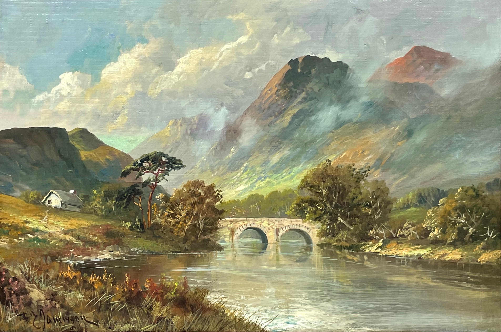

Francis E. Jamison Oil Paintings
We recreate the oil paintings from the late Francis E. James. We have tried and mastered his from of landscape and architecture paintings. Ranges for prices go from $800-$1200 depending on size and type.
Joachim Beuckelaer Life-like Paintings
Recreating the Joachim Beuckelaer paintings have been something we find most enjoyable. Starting lower at $500 a painting, you will get a very large and crafted piece of art for whatever room or space you want.
Isen'in Hoin Eishin Paintings

Recreating and finding the correct paper for the paintings is what we focus on in these paintings. It takes a lot for these to be created so specifics are required for purchase. Starting at $650 many of the sizes are the same and make nice pieces for any room.
Services
- Painting recreation
- Author Inspiration
- Painting Repairs
- Editing and Retouching